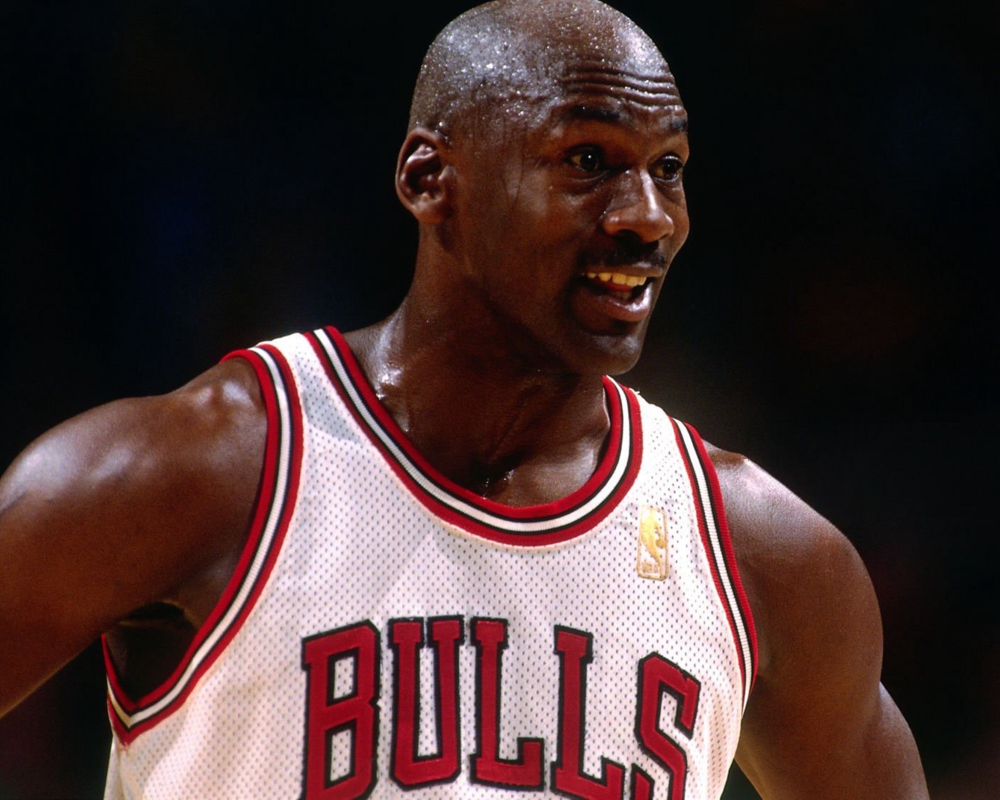
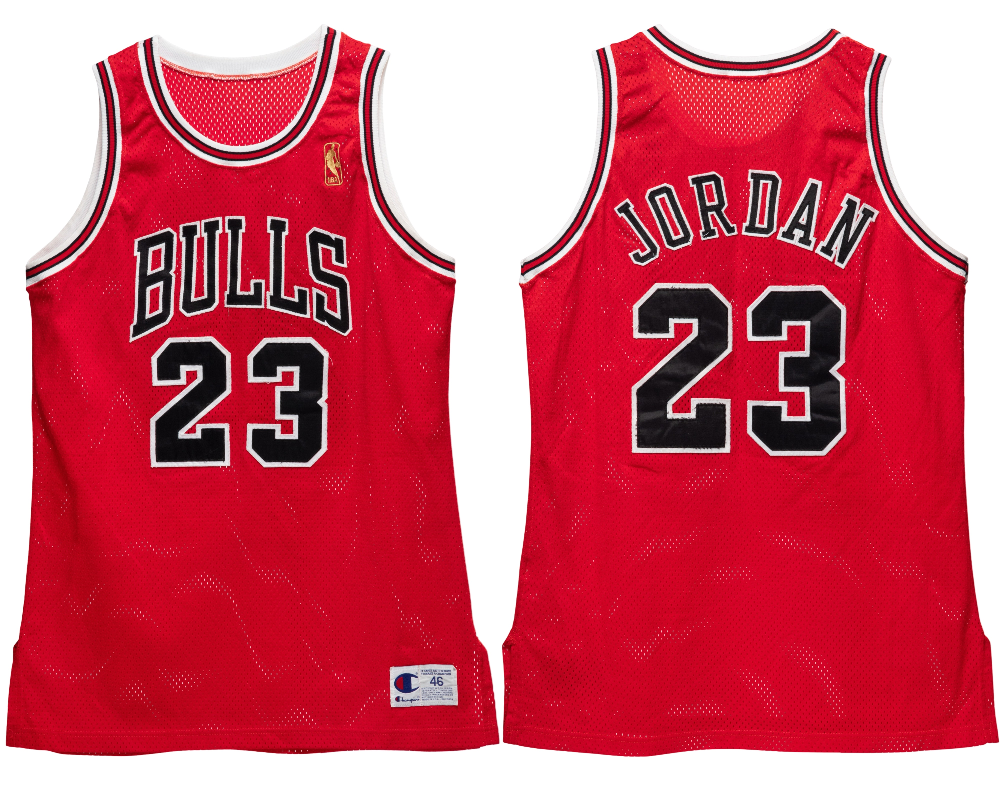

1996–97
Games Reviewed —
PRE 0 / 0 •
REG 17 / 82
Last Updated: February 15, 2026
Population Summary
| Style | Confirmed | Public | Audit |
|---|---|---|---|
| Home | 0 | 0 | ⏳ |
| Away | 1 | 1 | ⏳ |
The Michael Jordan Archive population study is an ongoing research initiative. Population conclusions reflect best-available documentation and comparative review.
Collectors, researchers, and institutions who wish to contribute relevant primary-source materials are invited to contact the archive.
Submissions are reviewed independently and treated with discretion.
Home (White)
Home A — (No Public Example Documented)

Game imagery used where no physical public example exists.
Research Notes
Full-season home audit remains in progress. This entry will be updated as additional primary-source imagery is reviewed.
Home B — (Placeholder)

Reference image (placeholder).
Research Notes
Add future documentation and continuity findings here.
Away (Red)
Away A — Sotheby’s (Nov 4, 2024)

Publicly documented example.
Public Sale Details
- Auction House: Sotheby’s
- Sale Date: November 4, 2024
- Lot #: Lot 1
- Sale Price: $4,680,000
- Games Photo-Matched: 12
- Photo-Matched By: Mei Gray
Research Notes
This 1996–97 Chicago Bulls road jersey was worn across five months of the championship season, from December 1996 through April 1997. The example represents the only publicly documented away jersey from this season currently confirmed within the population study.
Away B — (Placeholder)

Reference image (placeholder).
Research Notes
Add notes here (photomatch window, sourcing, tagging, attribution, etc.).